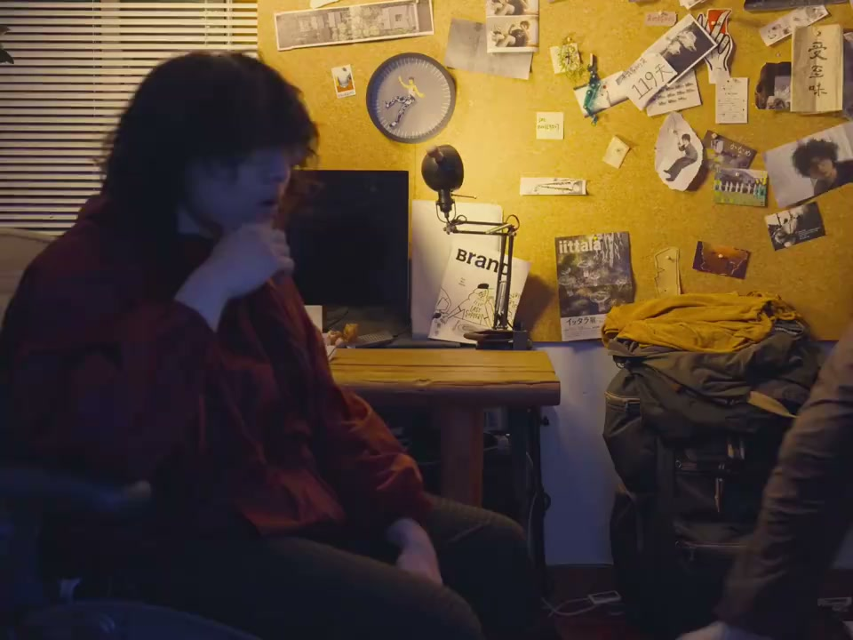
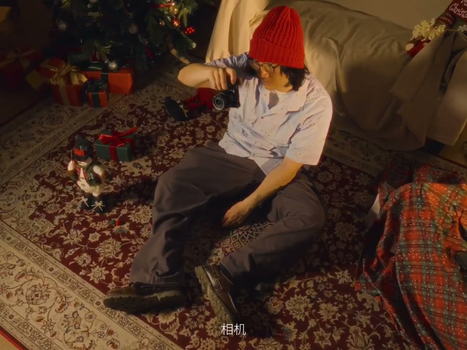
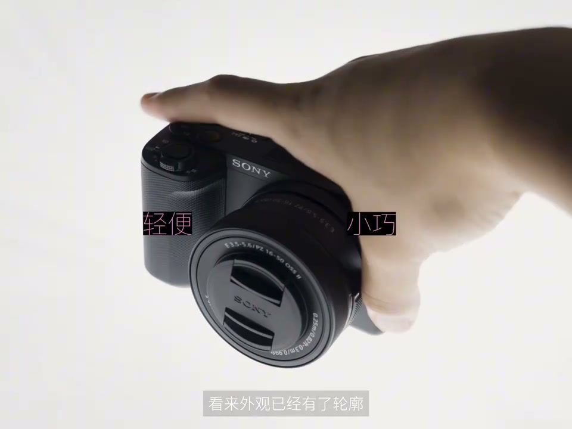

内容要点
[00:00] 六年前的我突然出現在這張書桌旁
[00:02] 他不到二十歲
[00:03] 正在叢林接觸影像創作
[00:04] 看起來剛剛看完韋三的《三在水中生活》
[00:07] 他此行的目的非常簡單
[00:08] 叫二十六歲的我
[00:11] 幫他挑選了一種第一台相機
[00:21] 他是過去的我
[00:21] 我是未來的特拉
[00:22] 我非常清楚在未來六年以及更長的時間
[00:24] 他會以視頻創作為生
[00:25] 拍攝等於幹活等於生活的全部
[00:27] 所以決定非常好做
[00:29] 我今天要套出全部的機序
[00:30] 拿下一台機構發達新聞強勁的電影機
[00:33] 並把它武裝到牙齒
[00:37] 他為這兒聽完我的建議
[00:38] 然後很狠狠推了我一帶的光
[00:42] 你憑什麼鬼話
[00:43] 我的人生
[00:44] 還像我跑笑的
[00:45] 我可能寫作
[00:46] 可能會話
[00:46] 可能成為一個科學家
[00:48] 也許我只需要用相機記錄探索
[00:49] 新城大海政府廣播
[00:51] 天際的點點瞬間
[00:52] 相機只是點綴
[00:53] 無視生活的全部
[00:55] 人生是曠野
[00:56] 無視鬼
[00:56] 等下我想起來了
[00:57] 那一年你是不是談戀愛了
[00:59] 沒錢了是吧
[01:02] 他像我坦白
[01:02] 除了談戀愛以外
[01:03] 一些空門的親戚在18歲以後
[01:05] 也趁機不給牙碎錢
[01:06] 所以他現在只能拿出
[01:10] 7000塊錢買相機
[01:13] 在這個預算下
[01:14] 我開始從心審視過去的自己
[01:16] 他身上有很多
[01:17] 和在座各位相同的特點
[01:19] 一個像他一樣的
[01:20] 新手選相機的時候
[01:22] 真正應該注意什麼呢
[01:25] 他過去的生活裡沒有相機
[01:26] 那麼第一台就不能有
[01:27] 太強的存在感
[01:28] 他會希望自己的人設
[01:29] 是喜歡派人東西的文藝青年
[01:30] 而不是事項大哥
[01:31] 頂端望在記憶卡裡
[01:32] 只是丟面子而不出販版
[01:34] 看來外觀已經有了輪廓
[01:36] 視頻vlog對話是太花時間
[01:38] 還有剪輯
[01:39] 也不知道能不能搞出來一條
[01:40] 拍照發奇怪的朋友圈
[01:42] 大概會是在相機前期的主要用途
[01:44] 他不會調參數
[01:44] 更沒所首動追焦
[01:45] 一句不能拍小的真兇故事
[01:49] 行了別拍我了
[01:52] 圈來女生行不行
[01:54] 所以直出和對焦
[01:55] 是重要的關鍵詞
[01:57] 直出也要分隔多遍
[02:00] 自帶多種多樣有簡單方便好看的
[02:01] 直出率竟是必選項
[02:03] 畢竟這個時候的他一天一個想法
[02:11] 但視頻參數也不能落後
[02:12] 他不是要框也不要軌道嗎
[02:14] 讓他會被突然愛上拍攝
[02:15] 所以這些東西全部都要塞進
[02:17] 八爪上的機身裡
[02:18] 電池也要塞一塊大的
[02:20] 一塊至少撐過他拍600多張照片才行
[02:23] 他一定期待更多的拍攝
[02:25] 新手有好的操控也得考慮在內
[02:28] 別忘了他這個不願打工的大學生
[02:30] 但有錢換進後
[02:31] 之前都只能跟配套的掛機頭為伴
[02:33] 麥克風式的配件更是暫時別想
[02:35] 所以這兩個方式必須好用才行
[02:37] 至少掛機頭不敢成功的焦段
[02:39] 有點滴滴感就更好
[02:40] 自帶的麥得智囊一點
[02:42] 智囊智囊智囊
[02:49] 終於我將一台無比合適的
[02:52] 終於我將一台無比合適的相機
[02:55] 替到了20歲的自己手裡
[02:57] 但我沒告訴他
[02:59] 他的唱響幾乎都不會實現
[03:02] 他沒能征服世界
[03:04] 第一次出國還得再等五年
[03:05] 他和他很快會分手
[03:06] 那張卡那塊硬盤都會被隔世化
[03:09] 他沒能學電影
[03:10] 直到畢業都沒能去電影學院旁聽
[03:12] 哪怕一疊口
[03:13] 他的探索會處處碰壁
[03:14] 躲在宿舍剪視頻
[03:15] 還是變成了最大的愛好
[03:18] 不過有一點他猜對了
[03:20] 他確實會用第一台相機拍很多東西
[03:38] 我突然想到一個問題
[03:39] 這是2024年7月才發佈的ZV-12代
[03:43] 如果他把他帶回六年前的話


